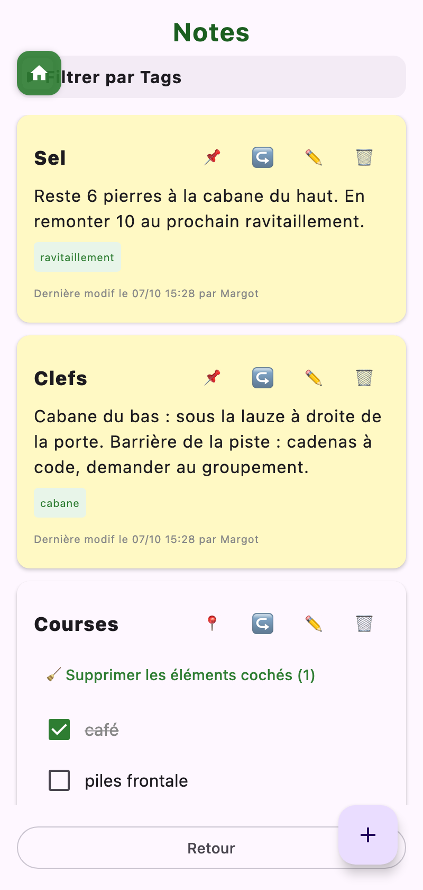
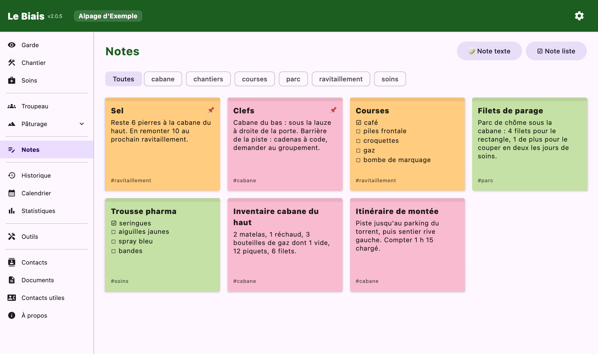

Les carnets annexes : ce qu'on griffonne, ce qu'on archive, et les gens qu'il faut pouvoir joindre.
Deux sortes de notes :
Chaque note reçoit des tags (« courses », « chantiers », et ceux que vous créez) ; Filtrer par Tags retrouve le lot voulu. Une note peut être épinglée sur l'accueil, partagée vers une autre application, ou sélectionnée avec d'autres pour une suppression groupée.
Les notes sont communes au projet : l'application indique qui a créé la note et qui l'a modifiée en dernier. Sur grand écran, elles s'affichent en grille de post-it.


Un classeur pour les papiers de la saison : contrat, fiches de paie, convention de pâturage, constats de prédation… Un document se crée à partir d'une 📷 Photo, d'une image de la 🖼️ Galerie ou d'un 📂 Fichier, reçoit un nom et des tags (« documents de pâturages », « documents d'embauche », « constat prédation », « Défens », ou les vôtres).
Un papier joint à une zone de défens arrive ici de lui-même, sous le tag « Défens » ; à l'inverse, un document déjà classé peut être relié à un ou plusieurs défens depuis leur fiche. Supprimer un défens ne supprime pas ses documents.
L'annuaire du projet : éleveurs, propriétaires, voisins, gestionnaires, vétérinaire… Pour chaque contact : nom, rôle, plusieurs téléphones et courriels, adresse postale, remarque, et des tags (« éleveurs », « gestionnaire », « voisins », ou personnalisés).
Comme tout le reste, l'annuaire se transmet avec le projet : la personne qui vous remplace arrive avec tous les numéros utiles.
Une page fournie avec l'application, la même pour tout le monde :